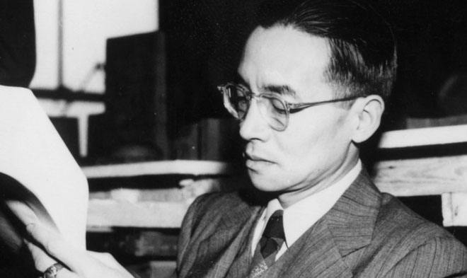
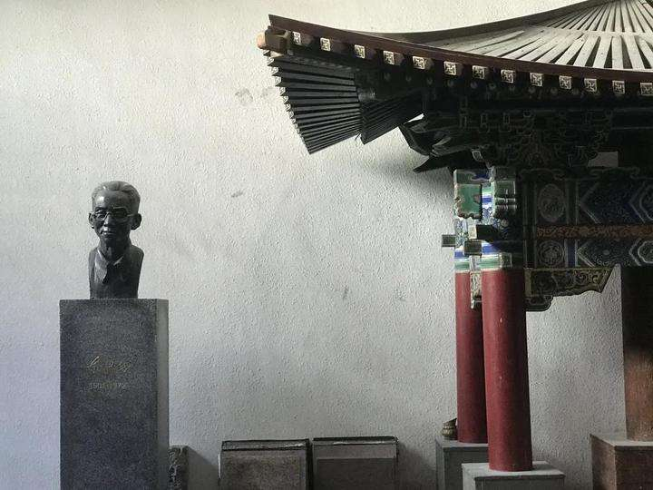
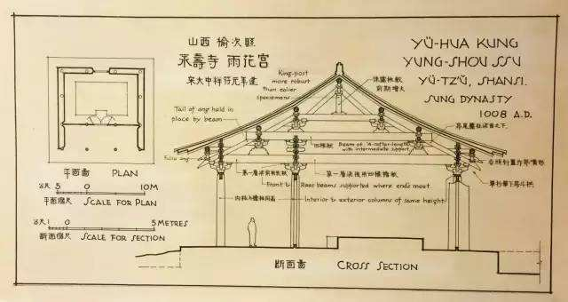

·Introduction
Liang Sicheng's photo
Liang Sicheng (20 April 1901 – 9 January 1972) was a Chinese architect and architectural historian,
known as the father of modern Chinese architecture. His father, Liang Qichao, was one of the most prominent Chinese scholars of the early 20th century.
His wife was the architect and poet Lin Huiyin. His younger brother, Liang Siyong, was one of China's first archaeologists.
Liang authored the first modern history on Chinese architecture, and he was the founder of the Architecture Department of Northeastern University in 1928 and Tsinghua University in 1946.
He was the Chinese representative of the Design Board which designed the United Nations headquarters in New York City. He, along with wife Lin Huiyin, Mo Zongjiang, and Ji Yutang,
discovered and analyzed the first and second oldest timber structures still standing in China, located at Nanchan Temple and Foguang Temple at Mount Wutai.
He is recognized as the “Father of Modern Chinese Architecture”. Princeton University, which awarded him an honorary doctoral degree in 1947,
issued a statement praising him as “a creative architect who has also been a teacher of architectural history, a pioneer in historical research and exploration in Chinese architecture and planning,
and a leader in the restoration and preservation of the priceless monuments of his country.”
·Biography

Liang Sicheng was born on 20 April 1901 in Tokyo, Japan.
In 1915, Liang entered Tsinghua College, a preparatory school in Beijing.
In 1924, he and Lin went to University of Pennsylvania funded by the Boxer Indemnity Scholarship Program to study architecture under Paul Cret.
He returned to China in 1929 and was hired as a professor in the Department of Physics, National Tsinghua University.
In 1928, Liang married Lin Huiyin, who had studied with him at the University of Pennsylvania and became an equally renowned scholar.
In 1930, Liang and his colleague, Zhang Rui, won an award for the physical plan of Tianjin.
In 1946, Liang Sicheng went to the United States to give lectures, was employed as a professor at Yale University in the United States, and served as a consultant architect for the design of the United Nations Building.
On January 9, 1972, Liang Sicheng died in Beijing.
·Thoughts

Liang Sicheng said in "Why Study Chinese Architecture": "The main purpose of studying real objects is to analyze and relatively calmly discuss the value of their engineering art,
and the evolution of styles and techniques over the past dynasties.With the knowledge and taste of their own country, their creative power will naturally become stronger unconsciously.
This is the greatest significance of studying Chinese architecture."
And his research on the history of Chinese architecture has also become his role in urban planning and protection,
the cornerstone and source of architectural design and education.
·Works

The Outline of History, 1932,
History of Chinese Sculpture, 1985
Architecture History in China,1998
A Pictorial illusion on principle in Qing Architecture,1981
Footnote on Yingzao Fashi, 1981
·Reference
Liang Sicheng - BaiduLiang Sicheng - Wikipedia